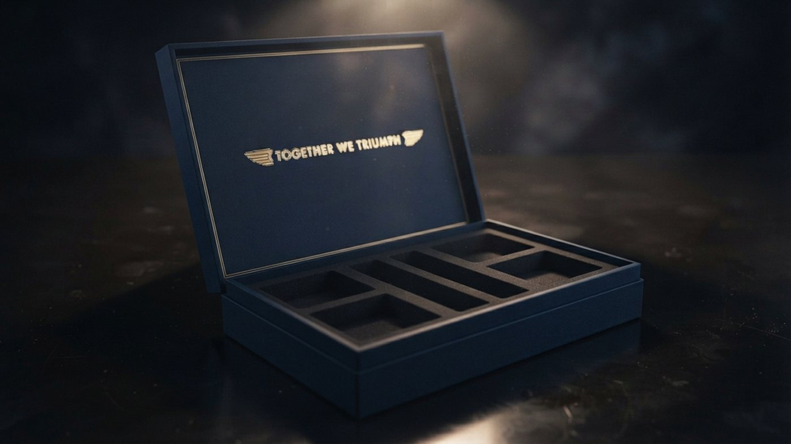
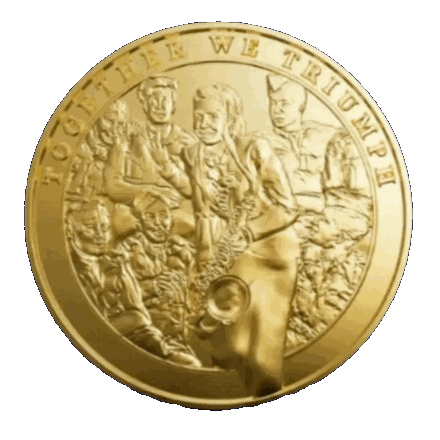
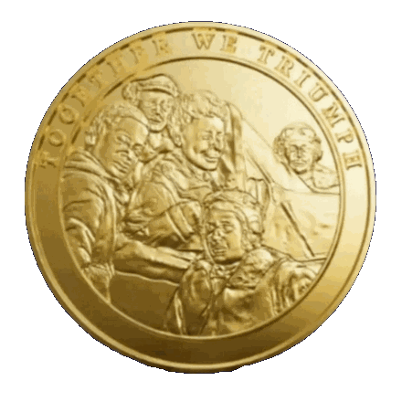

Legacy & Heritage
Pilots of the Caribbean & Tuskegee Airmen
They fought two wars at once — fascism abroad and racism at home — and their history was allowed to fade. This collection casts it in gold, backed by archive material from the war years, and produced under Royal Warrant.
First run: 500 sets. Allocated first come, first served.

The collection
A personal museum, in nine pieces
- 01
Two 24ct gold-finished coins, 38mmOriginal sculpted 3D relief by Jo Amery. One honours the Pilots of the Caribbean with Mona Baptiste aboard HMT Empire Windrush; one honours the Tuskegee Airmen with Lena Horne. Reverses carry the Lancaster, B-17, Spitfire and Mustang P51-D.
- 02
Rolls-Royce Merlin engine artefactA rare piece of 1944 combat-recorded Merlin engine metal, made into a credit-card sized piece telling its story.
- 03
Certificate of ProvenanceUnique to each set, from Worcestershire Medal Service Ltd — Royal Warrant holder as Medallist to King Charles III and Buckingham Palace.
- 04
Jamaica Spitfire Fund comic facsimileA replica of the Gleaner comic that raised money to buy aircraft for Britain.
- 05
Women at War printThe story of how women like Lena Horne and Mona Baptiste carried the war effort.
- 06
The Rolls-Royce Merlin storyA history of the engine and every aircraft it powered.
- 07
Aircraft to SupercarThe Rolls-Royce and Bentley story — how one company’s aero engineering became another’s road cars.
- 08
Art card printsSix reprints and original designs.
- 09
Museum in a Box bookletHow to care for, display and pass on the set.
The coins
Two coins, four aircraft, two women who carried the story

Pilots of the Caribbean
Obverse: Mona Baptiste aboard HMT Empire Windrush with RAF aircrew. Reverse: Lancaster and B-17 Flying Fortress.

Tuskegee Airmen
Obverse: Lena Horne with Tuskegee Airmen. Reverse: Spitfire and Mustang P51-D.
Provenance
Designed by Jo Amery. Creative producer Terry Jervis. Manufactured by Worcestershire Medal Service Ltd under their Royal Warrant as Medallist to King Charles III and Buckingham Palace. Produced by Legacy & Heritage Ltd. A portion of proceeds supports charities for service personnel and young people’s STEM education.
Reserve a set from the first 500
Reservations run through the official launch page. Each set is allocated in order of reservation.